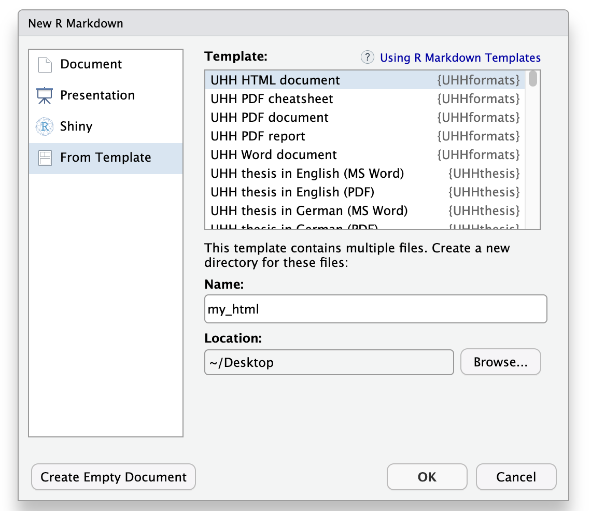

The UHHformats package provides R Markdown and Quarto templates for HTML, PDF, and Word output. This vignette gives a quick overview of the different templates and how to get started.
Available templates
| Template | R Markdown function | Quarto template |
|---|---|---|
| HTML document | html_doc() |
html_doc |
| Simple PDF document | pdf_doc() |
pdf_doc |
| PDF report | pdf_report()|pdf_report| | PDF cheat sheet | pdf_cheatsheet()
|
pdf_cheatsheet |
| Word document | word_doc() |
word_doc |
Getting started
R Markdown documents
Creating a document in RStudio
Once you installed the package you might need to close and re-open
RStudio to see the UHHformats templates listed.
Choose File > New File > R Markdown, then select From Template. You should then be able to create a new document from one of the package templates.
Choose the directory in which you want to save your file and provide a file name (that name will be used for both the .Rmd file and the new folder in which the .Rmd file will be placed).
If you are interested in the documentation already provided in the template file for getting started, render the document once before you start changing the content (click the
Knitbutton).

Creating a document from the console
Use create_rmd_doc() to create a new directory with the
template and all associated files:
UHHformats::create_rmd_doc(dirname = "my_report", template = "pdf_report")Or use the standard rmarkdown function:
rmarkdown::draft("my_report.Rmd", template = "html_doc", package = "UHHformats")Both functions create a subdirectory containing the .Rmd
file and all required resources (images, fonts, LaTeX templates,
etc.).
Rendering
In RStudio, click the Knit button. From the console:
rmarkdown::render("my_report/my_report.Rmd")Important note: rmarkdown::render uses
as default Pandoc to convert the Markdown document into PDF, HTML or
Word. While RStudio uses its internal Pandoc installation (e.g., on a
Mac located in ‘/Applications/RStudio.app/Contents/MacOS/pandoc/’), you
need to have Pandoc and its citation parser also installed on your
system. See https://pandoc.org/installing.html for instructions.
This book chapter is also helpful: https://bookdown.org/yihui/rmarkdown-cookbook/install-pandoc.html
YAML header
Each template pre-fills an appropriate YAML header. For example,
html_doc:
---
title: "Title"
author: "Name"
date: "2026-03-18"
output:
UHHformats::html_doc:
highlight: kate
code_folding: show
use_bookdown: true
number_sections: false
---See the help pages (e.g. ?html_doc,
?pdf_report) for all available options.
Quarto documents
Use create_quarto_doc() to set up a Quarto project:
UHHformats::create_quarto_doc(dirname = "my_html", template = "html_doc")
UHHformats::create_quarto_doc(dirname = "my_pdf", template = "pdf_doc", font = "TheSansUHH")Available templates: html_doc, pdf_doc,
pdf_report, pdf_cheatsheet,
word_doc.
Rendering
In RStudio, open the .qmd file and click
Render. From the console:
quarto::quarto_render("my_html/my_html.qmd")Template folder structure
Both create_rmd_doc() and
create_quarto_doc() create a new directory containing the
template file and all required resources. The folder structure depends
on the template and format:
R Markdown templates typically contain:
my_report/
├── my_report.Rmd # The R Markdown document
├── bib/ # Bibliography (.bib) and citation style (.csl) files
├── data/ # Example dataset (mtcars.csv)
└── images/ # Example images used in the templateQuarto templates include additional files:
my_report/
├── my_report.qmd # The Quarto document
├── bib/ # Bibliography (.bib) and citation style (.csl) files
├── data/ # Example dataset (mtcars.csv)
├── images/ # Example images used in the template
├── styles/ # Styling files (LaTeX headers, CSS, JS)
└── custom_lang.yml # Custom language settings (e.g., figure/table labels)The bib/ folder contains a sample .bib file
with dummy references and a .csl file for the citation
style (SAGE Harvard by default). The styles/ folder in
Quarto templates holds the LaTeX preamble files (for PDF) or CSS/JS
files (for HTML) that control the document appearance. The
custom_lang.yml file allows you to customise labels such as
“Figure”, “Table”, or “Contents” for different languages.
You can safely modify, add, or remove files in these folders to suit your needs.
Customising the pdf_report cover page
The pdf_report template includes a front cover page with
a background image. You can replace the default image by swapping the
file images/cover.png with your own image (keeping the same
file name).
In the Quarto version, you can additionally customise the cover appearance directly in the YAML header:
-
cover-bg-image: path to the cover image. -
cover-page-color: background colour as hex code (e.g.,"7EB7DF"). -
cover-text-color: title text colour as hex code (e.g.,"3A515C"). -
cover-fade-effect: iftrue(default), the background colour fades over the image from top to bottom. Set tofalseto display the image without the fade overlay.
In the R Markdown version, the cover image path is
set via the params field in the YAML header (e.g.,
cover: images/cover.png). Replace the image file to use
your own cover.
Font options
The default font for all templates is Helvetica. PDF and Word templates also support the University of Hamburg’s own font TheSans UHH (available to UHH members). Set the font via:
-
R Markdown:
font: "TheSansUHH"in the YAML header, orfont = "TheSansUHH"increate_rmd_doc() -
Quarto:
font = "TheSansUHH"increate_quarto_doc()
You can also use a custom font by setting font = "other"
and replacing the font_XXX.ttf files in the template
directory with your own files (keeping the same file names).
Prerequisites
- PDF output requires a LaTeX distribution. Recommended: tinytex.
- Quarto templates require the Quarto CLI.
See ?html_doc, ?pdf_doc,
?pdf_report, ?pdf_cheatsheet, or
?word_doc for all YAML options.